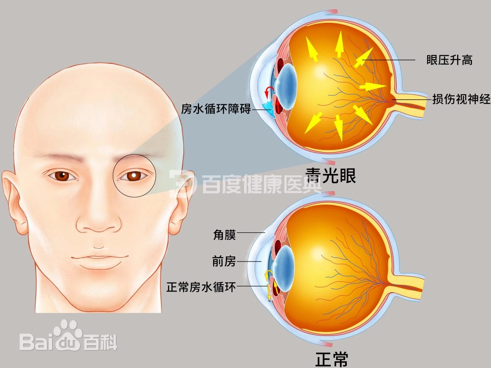

青光眼
危险程度
高风险
就医建议
建议及时就医
最佳就医时间
发现症状后尽快
什么是青光眼？
青光眼是一种进行性视神经病变，通常与眼压升高有关。如果不及时治疗，可能导致视神经损害甚至不可逆的失明。它是全球第二大致盲性眼病，早期诊断和治疗对预防视力损失至关重要。
关键特征：
- 进行性视神经病变
- 眼压异常升高
- 视野缺损进行性加重
- 视神经萎缩
青光眼分类
原发性开角型青光眼
最常见类型，房角开放但房水外流受阻，眼压缓慢升高
原发性闭角型青光眼
房角关闭导致房水排出受阻，可能出现急性发作
先天性青光眼
出生时即存在，房角发育异常导致房水引流障碍
继发性青光眼
由其他眼病、外伤或用药等因素导致
图示说明：
图1：青光眼发病机制示意图

上图展示了青光眼的发病机制
图2：正常眼睛与青光眼对比图
上图展示了正常眼睛与青光眼的对比
主要症状
视觉症状
视野缺损
从周边视野开始逐渐缺损
视力下降
晚期可出现显著视力下降
虹视
看到彩虹样光环
暗适应障碍
光线暗处视物困难
急性发作症状
眼痛
剧烈疼痛，可伴有头痛
恶心呕吐
可伴有自主神经症状
视物模糊
突然视力显著下降
角膜水肿
角膜混浊，视物不清
疾病进展
早期
眼压升高，可能无明显症状
中期
视野缺损扩大，视神经损害加重
晚期
视野严重缺损，视力显著下降
治疗方法
药物治疗
- β受体阻滞剂眼药水
- 前列腺素类药物
- 碳酸酐酶抑制剂
- α2-肾上腺素受体激动剂
激光治疗
- 激光周边虹膜切除术
- 选择性激光小梁成形术
- 激光睫状体光凝术
手术治疗
- 小梁切除术
- 青光眼引流阀植入
- 非穿透性小梁手术
预防建议
定期检查
建议40岁以上每年进行眼科检查
控制基础疾病
及时控制高血压、糖尿病等
保持运动
适度运动有助于控制眼压
用眼卫生
避免长时间用眼，注意休息
推荐医院
北京同仁医院
北京市东城区东交民巷1号
010-58266699